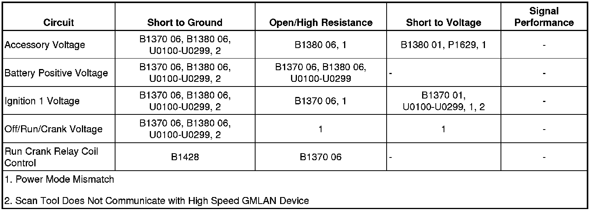

Wiring Systems and Power Management
DTC B1370
Diagnostic Instructions
* Perform the Diagnostic System Check - Vehicle (Initial Inspection and Diagnostic Overview) prior to using this diagnostic procedure.
* Review Strategy Based Diagnosis (Initial Inspection and Diagnostic Overview) for an overview of the diagnostic approach.
* Diagnostic Procedure Instructions (Initial Inspection and Diagnostic Overview)provides an overview of each diagnostic category.
DTC Descriptors
DTC B1370 01
- Device Ignition 1 ON and START Circuit Short to Battery
DTC B1370 06
- Device Ignition 1 ON and START Circuit Open
Diagnostic Fault Information

Circuit/System Description
This vehicles power mode master (PMM) is the body control module (BCM). The ignition switch is a low current switch with multiple discrete ignition switch signals to the PMM for determination of the power mode. The PMM receives the ignition switch signals, and additionally a reference voltage signal from the BCM, through the ignition switch, and back to the BCM. There are redundancies within the PMM system that can allow operation of certain subsystems when there are faults in the ignition switch circuits. Other information such as serial data input from other modules and DTCs is also used to determine what power mode signals and information is transmitted by the PMM. The BCM logic uses all this information to identify the operators desired power mode and activate specific discrete signals, and serial data messages for the operation of many different subsystems as necessary. Other modules which have switched voltage inputs may operate in a default mode if the PMM serial data message does not match what the individual module can see from its own connections.
The PMM will activate relays and other direct outputs of the PMM as needed according to the calculated power mode. Several relays controlled by the BCM are switched ignition voltage outputs the are pass through circuits within the BCM directly from the ignition switch. If these circuits short to ground, the fuse to the ignition switch will open.
Some system functions may operate one time and not the next with a specific fault in the ignition switch circuits depending on the vehicle operating conditions when the fault occurred. Some examples are as follows:
Vehicle Conditions
* Vehicle running or not running
* Multiple circuit faults
* Ignition key position
* Transmission gear selected
System Action
* The vehicle may or may not start
* Instrument panel indicators may illuminate or not illuminate at inappropriate times
* Remote start may operate incorrectly
* Ignition key may not return to OFF
* Specific Retained Accessory Power (RAP) functions may operate while others do not
Conditions for Running the DTC
B1370 01
Ignition switch is in the OFF or ACC positions.
B1370 06
Ignition switch is in the START position.
Conditions for Setting the DTC
B1370 01
Ignition 1 voltage circuit is shorted to voltage for more than 2 seconds.
B1370 06
* Ignition 1 voltage circuit is open for more than 2 seconds.
* Ignition 1 voltage, accessory voltage, or off/run/crank voltage circuit shorted to ground.
* Battery positive voltage circuit of the ignition switch open or shorted to ground.
* Run crank relay coil control circuit open (including relay coil and ground).
Conditions for Clearing the DTC
* A current DTC clears when the malfunction is no longer present.
* A history DTC clears when the module ignition cycle counter reaches the reset threshold, without a repeat of the malfunction.
Diagnostic Aids
* A short to ground in the accessory wakeup serial data circuit will cause an open fuse to the ignition switch. DTC U1814 should be current.
* A short to ground in the run/crank ignition 1 voltage circuit of the run crank relay will cause an open fuse to the ignition switch. DTC B1428 should be current.
* The power modes and controls are determined using BCM logic. Comparing the Body Control Module Power Mode data display parameters listed in Circuit/System Verification will determine if there is a power mode fault.
Reference Information
Schematic Reference
* Power Moding Schematics (Power Moding Diagrams)
* Power Distribution Schematics (Power Distribution Diagrams)
Connector End View Reference
Component Connector End Views (Connector Views)
Description and Operation
Retained Accessory Power (RAP) Description and Operation (Retained Accessory Power (RAP) Description and Operation)
Electrical Information Reference
* Circuit Testing (Component Tests and General Diagnostics)
* Connector Repairs (Component Tests and General Diagnostics)
* Testing for Intermittent Conditions and Poor Connections (Component Tests and General Diagnostics)
* Wiring Repairs (Component Tests and General Diagnostics)
Scan Tool Reference
Control Module References (Programming and Relearning)for scan tool information.
Circuit/System Verification
1. Verify that the following DTCs are not set: U1814, B1428.
• If either of the DTCs are set, refer to for diagnosis.
2. With a scan tool, verify the Power Mode data display parameters match the chart below. The PMM Power Mode Parameters table below illustrates the correct state of these input parameters (circuits) in correspondence to the ignition switch position. The circuits which the individual parameters are related to are in parentheses.

If any parameters are incorrect in any key position, proceed to the Circuit/System Testing.
Circuit/System Testing
Important: You must perform the Circuit/System Verification before proceeding with Circuit/System Testing.
1. Verify the Ign Switch fuse is not open.
• If the fuse is open, test the following circuits for a short to ground, if all circuits test OK, replace the BCM.
* Ignition Switch Battery positive voltage - Terminal 1
* Ignition Switch Ignition 1 voltage - Terminal 2
* Ignition Switch Accessory voltage - Terminal 4
* Ignition Switch Off/Run crank voltage - Terminal 5
2. Disconnect the Key In Switch harness connector.
3. Ignition OFF, test for less than 5 ohms of resistance between the Key In Switch terminal 1 and terminal 2.
• If greater than the specified range, replace the Key In Switch.
4. Ignition OFF, key out, test for infinite resistance between the Key In Switch terminal 1 and terminal 2.
• If less than the specified range, replace the Key In Switch.
5. Connect the Key In Switch harness connector.
6. Disconnect the ignition switch harness connector.
7. Test for battery positive voltage between the battery positive voltage circuit of the ignition switch and ground.
• If not the specified value, test the circuit for an open/high resistance
Important: The ignition switch component test must be preformed before proceeding with this test to verify the integrity of the switch.
8. Perform the ignition switch component test. The test should pass.
• If the ignition switch fails, replace the ignition switch.
9. Ignition OFF, disconnect BCM connector X1, test for less than 1 volt between the following circuits of the BCM and ground.
* Ignition key resistor signal Terminal 4
* Off/Run crank Terminal 2
* Accessory voltage Terminal 21
* Ignition 1 voltage Terminal 14
• If not the specified range, test the circuit for a short to voltage.
10. Ignition key out, test for less than 1 volt between the following circuits of the BCM and ground.
* Ignition key resistor signal Terminal 4
* Off/Run crank Terminal 2
* Accessory voltage Terminal 21
* Ignition 1 voltage Terminal 14
• If not the specified range, test the circuit for a short to voltage.
11. Disconnect the Key In Switch harness connector.
12. Install a jumper wire between the Key In Switch terminal 1 and terminal 2.
13. Test for less than 5 ohms of resistance between the BCM and the ignition switch on the following circuits.
* Ignition key resistor signal Terminal 4 and Terminal 6
* Off/Run crank Terminal 2 and Terminal 5
* Off/Run crank Terminal 2 and Terminal 3
* Accessory voltage Terminal 21 and Terminal 4
* Ignition 1 voltage Terminal 14 and Terminal 2
• If not the specified range, test the circuit for open/high resistance.
14. Test for infinite resistance between the BCM ignition key resistor signal circuit terminal 4 and ground.
• If not the specified value, test the signal circuit for a short to ground.
15. If all circuits test normal, replace the BCM.
Component Testing
Ignition Switch
Using the Resistance Test below, check the resistance between the pins of the ignition switch listed in each switch position listed.
If any reading is other than specified, replace the ignition switch.

Repair Instructions
Perform the Diagnostic Repair Verification (Verification Tests) after completing the repair.
* Control Module References (Programming and Relearning)for BCM replacement, setup, and programming
* Ignition and Start Switch Replacement (Service and Repair)